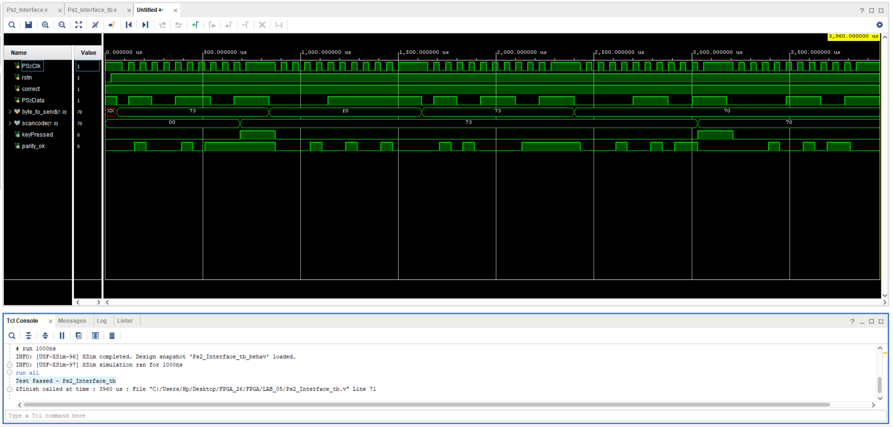

1. The Big Picture
This lab makes the FPGA read an external numeric keypad over PS/2 and show, on the two right-hand 7-segment digits, the 8-bit "scan code" of the key you just pressed (as 2 hex symbols). Every press also produces one short visible blink on LED LD0.
[Numeric keypad]
│ PS2Clk, PS2Data (≈ 10–17 kHz, idle most of the time)
▼
┌──────────────────────┐ scancode[7:0] ┌──────────────────────┐
│ Ps2_Interface │ ────────────────▶ │ Ps2_Display │
│ (slow PS2Clk domain)│ keyPressed │ (fast 100 MHz) │
└──────────────────────┘ ────────────────▶ └──────────┬──────────┬─┘
│seg[6:0] │ led
│an[3:0] │
│dp │
▼ ▼
4-digit 7-seg display, LD0 LED
5 → display shows 73, LED blinks once. Press 0 → display shows 70, LED blinks. Hold a key → display stays, LED does not blink again.
2. The Lab Goals (the test material)
The PDF explicitly says "This is also the material for the test". There are exactly two topics:
Its advantages and disadvantages, when to use it, and the metastability/recovery–removal danger when it is de-asserted. See §7.
3. The Keyboard – what it is & how every key works
The lab uses a small numeric (USB-HID) keypad. Even though it has a USB plug, the Basys3 wires the two host-side lines on its USB connector to FPGA pins C17 (clock) and B17 (data), so the keypad communicates with the FPGA using the PS/2 protocol — not real USB. (The PDF explicitly tells us to disregard what the Basys3 board manual says.)
3.1 What happens when you press a key
- You press a physical key — say numpad
5. - The keyboard's internal microcontroller looks up the key's "make code" in its table — for numpad
5this is the byte0x73. - It packs that byte into an 11-bit frame (start, 8 data, parity, stop) and shifts it out on
PS2Datawhile togglingPS2Clk11 times. - If you keep holding the key, the keyboard auto-repeats the same make code (this is called typematic repeat) — typically after ~500 ms delay, then every ~100 ms.
- When you release the key, the keyboard sends a break code: the byte
0xF0, followed by the same make code (e.g.0xF0 0x73for releasing numpad5).
3.2 The numeric keypad scan-code table (PS/2 Set 2 — the standard set)
| Key | Make code | Break code | Type |
|---|---|---|---|
| 0 | 0x70 | 0xF0 0x70 | normal |
| 1 | 0x69 | 0xF0 0x69 | normal |
| 2 | 0x72 | 0xF0 0x72 | normal |
| 3 | 0x7A | 0xF0 0x7A | normal |
| 4 | 0x6B | 0xF0 0x6B | normal |
| 5 | 0x73 | 0xF0 0x73 | normal |
| 6 | 0x74 | 0xF0 0x74 | normal |
| 7 | 0x6C | 0xF0 0x6C | normal |
| 8 | 0x75 | 0xF0 0x75 | normal |
| 9 | 0x7D | 0xF0 0x7D | normal |
| . (decimal) | 0x71 | 0xF0 0x71 | normal |
| + | 0x79 | 0xF0 0x79 | normal |
| − | 0x7B | 0xF0 0x7B | normal |
| * | 0x7C | 0xF0 0x7C | normal |
| NumLock | 0x77 | 0xF0 0x77 | normal |
| / (numpad slash) | 0xE0 0x4A | 0xE0 0xF0 0x4A | extended |
| Enter (numpad) | 0xE0 0x5A | 0xE0 0xF0 0x5A | extended |
5 → display 73; press 0 → 70; press / → 4A (the E0 is invisible — that's why we filter it). The two left digits stay blank.
4. How the PS/2 Clock Works
4.1 The keyboard is the clock master
Unlike most synchronous interfaces, the FPGA does not generate PS2Clk. The keyboard drives the clock line. This is why the PDF calls PS/2 a device-driven protocol.
4.2 The clock is not free-running — this is the key point
The PS/2 clock does not toggle all the time. It is held idle-HIGH when no transmission is happening, and only toggles for exactly 11 pulses while a single byte is being sent. Frequency during transmission is roughly 10–17 kHz (period ≈ 60–100 µs).
This single fact drives several of our design choices:
- We cannot use a synchronous reset on the PS2Clk domain — when the keyboard isn't sending, the clock is dead and a sync reset would never take effect. That's why
rstninPs2_Interfaceis asynchronous (negedge rstnis in the sensitivity list). - We must decode the byte before the stop bit — if we waited for the stop bit and a following clock edge to act on it, that edge might never come (idle clock). The PDF hint says: "evaluate the received bits every 11 clock cycles", "analyze the packet before the last cycle".
- The 100 MHz system clock is a separate domain — that's why we have
clk(100 MHz, always running) for the display andPS2Clk(slow, intermittent) for the receiver. Crossing data between them is a CDC problem (§8).
4.3 Sampling rule
By PS/2 convention, the host (us) reads PS2Data on the falling edge of PS2Clk — that's the moment the keyboard guarantees the data line is stable. That's why our receiver always-block is triggered on negedge PS2Clk.
always @(negedge PS2Clk or negedge rstn) begin ...5. The 11-bit Frame & Sampling Rule
Every byte sent by the keyboard is wrapped in an 11-bit envelope, transmitted LSB first:
| Bit # | 0 | 1 | 2 | 3 | 4 | 5 | 6 | 7 | 8 | 9 | 10 |
|---|---|---|---|---|---|---|---|---|---|---|---|
| Name | Start | D0 | D1 | D2 | D3 | D4 | D5 | D6 | D7 | Parity | Stop |
| Value | always 0 | data byte LSB → MSB | odd | always 1 | |||||||
- Start bit (always 0) — pulls the line low to mark the beginning of a frame.
PS2Datais idle-high so the falling edge is the start of transmission. - 8 data bits, LSB first — so the byte
0x73 = 0111 0011goes out as1, 1, 0, 0, 1, 1, 1, 0. - Odd parity — the parity bit is chosen so the total number of 1s among the 8 data bits + the parity bit is odd. This lets the receiver detect a single-bit error. In the design:
parity_ok = (shift_reg[21] == ~(^cur_byte))— i.e. parity bit equals the inverse of the XOR-reduction of the data. - Stop bit (always 1) — returns the line to idle.
Worked example — byte 0x73 (numpad 5):
| Pos | 0 | 1 | 2 | 3 | 4 | 5 | 6 | 7 | 8 | 9 | 10 |
|---|---|---|---|---|---|---|---|---|---|---|---|
| Bit | start | D0 | D1 | D2 | D3 | D4 | D5 | D6 | D7 | par | stop |
| Value | 0 | 1 | 1 | 0 | 0 | 1 | 1 | 1 | 0 | 0 | 1 |
5 ones in the data → already odd → parity bit = 0. Check the testbench: frame = {1'b1, ~(^b), b, 1'b0} — that's stop, parity, byte (MSB-down), start — exactly this frame.
6. What is E0? What is F0? When are they toggled and why?
These are the two special "prefix" bytes that the PS/2 protocol uses to extend its 1-byte scan-code system. They are the source of almost every bug in this lab.
6.1 0xE0 — the extended prefix extended
- The original PS/2 set has only 256 possible byte codes, but PCs grew to have far more than 256 distinguishable keys (numpad keys vs. main-keyboard keys, arrow keys, multimedia keys, etc.).
- To fit them all, IBM marked the "new" keys with a leading
0xE0byte. So a key like numpad/sendsE0 4Aon press, instead of a single byte. - When is it toggled? Only for those extended keys — and only as the first byte of the transmission. So:
- Press numpad
5→73(no E0 — it's not extended) - Press numpad
/→E0 4A(E0 first, then 4A) - Release numpad
/→E0 F0 4A(extended-release: E0, then F0, then 4A)
- Press numpad
- Why must we ignore it? The PDF tells us to display only the 2 hex digits of the last byte and to ignore the
0xE0. If we displayedE0, the display would briefly showE0then jump to4A— flicker, looks wrong. We also must not generate akeyPressedpulse onE0, otherwise the LED would blink twice for one press.
6.2 0xF0 — the break/release prefix break
- When a key is released, the keyboard sends
F0followed by that key's make code. So releasing5→F0 73. - When is it toggled? Every time a key goes up, never on a press, never on a typematic repeat.
- Why must we ignore it for the display? Because the user only cares about press events. If we let
F0reach the display, the display would briefly sayF0on every release. We also must not pulsekeyPressedon a release. - But we still use it! Seeing an
F0is how the receiver knows the next make code is a new press, not a typematic repeat. That's exactly what theis_validflag inPs2_Interfacedoes: it gets re-armed (set to1) whenever we've just seen anF0followed by the make code of the released key.
6.3 How our design handles them — in one block of Verilog
if (bit_count == 4'd10) begin
if (cur_byte == 8'hE0 || cur_byte == 8'hF0) begin
// skip — these are prefix bytes, do nothing
end
else if (prev_byte == 8'hF0) begin
is_valid <= 1'b1; // we just saw a release → re-arm
end
else begin
scancode <= cur_byte; // normal make code → present it
if (is_valid) begin
keyPressed <= parity_ok; // pulse only if not a typematic repeat
is_valid <= 1'b0; // disarm until next release
end
end
end6.4 Why this works — walk through a full press / hold / release
- Press
5→ keyboard sends73.cur=73,prev=00. Falls into else:scancode=73;is_valid=1initially, sokeyPressedpulses; thenis_valid→0. - Hold
5→ keyboard sends73again (and again…). Each time:cur=73,prev=73, falls into else:scancode=73(already 73), butis_valid=0, so no pulse. ✅ - Release
5→ keyboard sendsF0 73.- Byte
F0:cur=F0→ first if branch hits, skip. - Byte
73:cur=73,prev=F0→ second if branch hits,is_valid=1.scancodenot updated, no pulse. ✅
- Byte
- Press
0→ keyboard sends70.cur=70,prev=73(the release byte we ignored). Falls into else:scancode=70;is_valid=1(we re-armed it in step 3), sokeyPressedpulses. ✅
7. Asynchronous Reset — why we MUST use it here
7.1 The two flavours of reset, side by side
// SYNCHRONOUS reset — reset only acts on a clock edge
always @(posedge clk)
if (rst) q <= 0; else q <= d;
// ASYNCHRONOUS reset — reset acts the instant it is asserted
always @(posedge clk or posedge rst) // <-- rst in sensitivity list
if (rst) q <= 0; else q <= d;7.2 Side-by-side table (this is on the test)
| Asynchronous reset | Synchronous reset | |
|---|---|---|
| Advantage | Works even when the clock is idle — critical for the PS/2 clock domain which is dead most of the time. Doesn't depend on the clock; reset happens immediately. | Easy static-timing analysis (reset is just data). Predictable: only takes effect on the next clock edge. |
| Disadvantage | Reset removal is dangerous: if reset is released too close to a clock edge it violates recovery / removal time → metastability. Needs a reset synchroniser (see Metastability.pptx). |
Useless if the clock is not toggling. The reset pulse has to be wider than one clock period to be captured at all. |
7.3 Why we picked async for this lab
Ps2_Interfaceis clocked byPS2Clk, which is idle most of the time. If reset were sync, pressing the reset button while the keyboard is silent would do nothing — the registers would never clear. We need them to clear immediately.Ps2_Displayis clocked by the 100 MHzclk, which is always running. Sync reset would technically work — but for code symmetry and because of the same-shape interface (active-lowrstn) we use async there too. (Look at the always-blocks:posedge clk or negedge rstn.)rstnis active-low. The board button (btnC, pin U18) is active-high when pressed, soPs2_Topinverts it:wire rstn = ~reset;
8. Two Clock Domains — Clock Domain Crossing
Two signals (scancode, keyPressed) are produced in the slow PS2Clk domain and consumed in the fast clk (100 MHz) domain inside Ps2_Display. Without careful design that crossing is unsafe: when the 100 MHz clock samples keyPressed, it might catch it right while it's changing, which can drive a flip-flop into metastability.
8.1 Our solution — a 3-flop synchroniser + edge detector
always @(posedge clk or negedge rstn) begin
if (!rstn) begin
kp_sync1 <= 0; kp_sync2 <= 0; kp_prev <= 0;
valid_scancode <= 8'h00;
end else begin
kp_sync1 <= keyPressed; // 1st FF — may be metastable
kp_sync2 <= kp_sync1; // 2nd FF — almost always settled
kp_prev <= kp_sync2; // 3rd FF — used for edge detection
if (kp_sync2 & ~kp_prev) // rising edge detect
valid_scancode <= scancode;
end
end8.2 Why it works
- Two flip-flops in series reduce the probability of metastability to vanishing levels — the first FF absorbs the rare bad sample, the second one almost certainly sees a clean value.
- The third FF + AND turns the (now-stretched-and-synced)
keyPressedlevel into a single 100 MHz cycle pulse — exactly whenkp_sync2goes0→1. That single-cycle pulse is what latches the scancode and kicks off the LED timer. - scancode doesn't need its own synchroniser bus because we sample it on that already-clean pulse (a classic "data + valid" CDC pattern). By the time the pulse fires,
scancodehas been stable for hundreds of µs in the slow domain.
9. Ps2_Top.v — the top-level wiring
This file is a thin top — it just instantiates the two real workers and connects them to the FPGA pins. It is the equivalent of Lab 4's Stopwatch.v.
9.1 Ports
| Port | Dir | Pin | Meaning |
|---|---|---|---|
clk | in | W5 | 100 MHz Basys3 system clock |
reset | in | U18 (btnC) | Active-high push-button. We invert it inside to get rstn. |
PS2Clk | in | C17 | PS/2 clock from keyboard (with PULLUP) |
PS2Data | in | B17 | PS/2 data from keyboard (with PULLUP) |
seg[6:0] | out | U7,V5,U5,V8,U8,W6,W7 | 7-seg cathodes a..g (active low) |
an[3:0] | out | W4,V4,U4,U2 | 4 digit anodes (active low) |
dp | out | V7 | Decimal point (here always off → tied to 1'b1) |
led | out | U16 (LD0) | Strobe LED |
9.2 Body
wire rstn = ~reset; // btnC is active-high → invert
wire keyPressed;
wire [7:0] scancode;
Ps2_Display u_display(
.clk(clk), .rstn(rstn),
.keyPressed(keyPressed), .scancode(scancode),
.seg(seg), .an(an), .dp(dp), .led(led));
Ps2_Interface u_interface(
.PS2Clk(PS2Clk), .rstn(rstn), .PS2Data(PS2Data),
.scancode(scancode), .keyPressed(keyPressed));10. Ps2_Interface.v — the PS/2 receiver (the heart of the lab)
10.1 Ports
| Port | Dir | Width | Meaning |
|---|---|---|---|
PS2Clk | in | 1 | Keyboard clock — used as the actual clock of this module's flip-flops |
rstn | in | 1 | Active-low asynchronous reset |
PS2Data | in | 1 | Serial data — sampled on negedge of PS2Clk |
scancode | out | 8 | Most recent accepted make code |
keyPressed | out | 1 | One-cycle pulse (in PS2Clk domain) at the first make code of a new press |
10.2 Internal state
reg [21:0] shift_reg; // holds 2 consecutive frames (= 22 bits)
reg [3:0] bit_count; // counts 0..10 inside one frame
reg is_valid; // = 1 → next make code may pulse keyPressed
wire parity_ok;
wire [7:0] cur_byte = shift_reg[20:13]; // current frame's data
wire [7:0] prev_byte = shift_reg[9:2]; // previous frame's data10.3 Why a 22-bit shift register?
The PDF's "easy way" hint is to use a 22-bit shift register. 22 = 2 × 11, so it holds two complete PS/2 frames back-to-back. We need to look at both simultaneously because:
- cur_byte tells us what the keyboard just sent.
- prev_byte tells us what came right before, so we know if the previous byte was an
F0(release prefix). Without the previous byte we couldn't distinguish "fresh press" from "make code after release".
10.4 Why those specific slice indices [20:13] and [9:2]?
The shift register shifts right: new PS2Data bit goes into shift_reg[21], and the previous content shifts down by one (shift_reg <= {PS2Data, shift_reg[21:1]}). After 11 shifts of a single frame, the bits land at:
| shift_reg index | 21 | 20 | 19 | 18 | 17 | 16 | 15 | 14 | 13 | 12 | 11 |
|---|---|---|---|---|---|---|---|---|---|---|---|
| Meaning | parity | D7 | D6 | D5 | D4 | D3 | D2 | D1 | D0 | start (=0) | — |
So cur_byte = shift_reg[20:13] is exactly {D7..D0}, the byte in normal MSB-first form. And parity_ok compares the parity bit at shift_reg[21] against odd parity of cur_byte:
assign parity_ok = (shift_reg[21] == ~(^cur_byte));After another full frame has shifted in (22 total bits), that earlier "frame 1" has moved down by 11 positions, so prev_byte = shift_reg[9:2].
10.5 Why bit_count == 10 and not 11?
The counter increments at the same clock edge it shifts on. At bit_count==10, the old shift_reg we read in the if-statement already contains 10 bits of the current frame (start through parity). That is enough to know the data byte and check parity. We deliberately decide before the stop bit arrives — exactly the PDF hint:
If we waited for bit 11 (the stop), and the next press never came, that next clock edge to "act" on the data would never come either — the receiver would be stuck.
10.6 The full sampling block — annotated
always @(negedge PS2Clk or negedge rstn) begin
if (!rstn) begin
bit_count <= 4'b0;
shift_reg <= 22'b0;
scancode <= 8'b0;
keyPressed <= 1'b0;
is_valid <= 1'b1; // armed on reset → first key will fire
end else begin
shift_reg <= {PS2Data, shift_reg[21:1]};
bit_count <= (bit_count == 4'd10) ? 4'd0 : bit_count + 4'd1;
keyPressed <= 1'b0; // default — only one cycle of '1'
if (bit_count == 4'd10) begin
// (See §6.3 — three cases: prefix / after-release / normal)
end
end
endkeyPressed <= 0 at the top, then only set it to 1 in the narrow case where a brand-new press is detected. That guarantees a single-cycle pulse without needing a separate "clear" branch.11. Ps2_Display.v — visual feedback & CDC
This module turns the slow-domain (scancode, keyPressed) into board-visible output: the right-hand 2 digits of the 4-digit 7-seg, and one short LED blink per press.
11.1 What it does, end-to-end
- Synchronises
keyPressedfrom the PS2Clk domain into the 100 MHz domain (3-FF synchroniser, §8). - Detects the rising edge of the synced pulse →
kp_edge(1 cycle wide @ 100 MHz). - On
kp_edge, latches the currentscancodeintovalid_scancode. (Nowscancodecan change in the slow domain without disturbing the display.) - On
kp_edge, loads a 24-bit timer with10_000_000. The timer counts down at 100 MHz → ≈ 100 ms.ledstays1while the timer is non-zero, then drops. That's the strobe. - Multiplexes the two right-hand 7-seg digits between the low and high nibble of
valid_scancode, with the segment-pattern lookup table.
11.2 Why ~0.1 s for the LED strobe?
The PDF says "a short pulse on one of the board LEDs, yet long enough to be noticed by the naked eye". Below ~50 ms the eye misses the flash; above ~150 ms it starts to feel like a sluggish blink instead of a strobe. ~100 ms is a sweet spot. 24'd10_000_000 cycles × 10 ns = 100 ms. We picked a 24-bit timer because 2^24 = 16 777 216 ≥ 10 000 000.
11.3 The 7-seg multiplexing
reg [19:0] clkdiv;
always @(posedge clk or negedge rstn) begin
if (!rstn) clkdiv <= 0;
else clkdiv <= clkdiv + 1;
end
assign s = clkdiv[19:18]; // changes every 2^18 / 100MHz ≈ 2.62 msSo each digit is lit for ~2.62 ms; a complete sweep of all 4 digits takes ~10.5 ms (~95 Hz refresh) — well above the eye's flicker fusion threshold. We use only digits 0 (rightmost) and 1; digits 2 and 3 stay blank (an = 4'b1111, no anode active).
11.4 Segment encoding
The 7-seg is common-anode active-low on Basys3 → segment OFF=1, ON=0. The encoding for 0 is 7'b1000000 meaning segments g off, others on (the classic "0" shape). All 16 hex digits 0–F are encoded; D is lowercase d and B is lowercase b to distinguish them from 0 and 8 on the segment grid (PDF requirement).
11.5 dp is fixed off
We chose the "lowercase d/b" route, so we don't need the decimal point to disambiguate. So assign dp = 1'b1; (off).
12. Seg_7_Display.v — Lab-4 legacy module
This file is the unmodified Lab-4 multiplexed 7-seg module. The Lab-5 guide originally said to "adapt" it. In our final design we ended up writing the multiplexer directly inside Ps2_Display (so the latched valid_scancode wiring is cleaner). The file is still in the project for two reasons: (1) it shows where the multiplexing idea came from; (2) keeping it doesn't cost anything because it isn't instantiated in Ps2_Top, so synthesis silently drops it.
Ps2_Display so we wouldn't have to plumb valid_scancode back out as 16 bits; the file is kept as a reference because the 7-seg refresh strategy is the same.
13. Ps2_Interface_tb.v — testbench
The PDF says we simulate only Ps2_Interface. The bench emulates the keyboard.
13.1 Timing parameter
localparam CLK_HALF = 30_000; // 30 µs half period → 60 µs period ≈ 16.7 kHzThis matches the PS/2 spec (10–17 kHz). The bench drives PS2Clk directly (no skew, no jitter), with each half-bit-period 30 µs long.
13.2 The send_byte task — the real meat
task send_byte(input [7:0] b);
integer k;
reg [10:0] frame;
begin
frame = {1'b1, ~(^b), b, 1'b0}; // stop, parity(odd), data, start
for (k = 0; k < 11; k = k + 1) begin
PS2Data = frame[k]; // LSB of 'frame' (= start) goes out first
#CLK_HALF; PS2Clk = 0;
#CLK_HALF; PS2Clk = 1;
end
#(CLK_HALF*4); // idle gap so design has time to react
end
endtaskThe frame is bit-banged exactly as the keyboard would do it: set data → wait → drop clock → wait → raise clock. The DUT's always @(negedge PS2Clk) samples on that falling edge.
13.3 The three scenarios we test (from the PDF requirements)
- Press
5(0x73) — checkscancode == 0x73andkeyPressedpulsed. - Release
5(F0 73) then press0(0x70) — checkscancode == 0x70andkeyPressedpulsed (the F0 sequence must not have killed our pulse logic). - Hold
0(auto-repeat sends0x70again) — checkscancodestill0x70andkeyPresseddid NOT pulse this time.
The bench ANDs a correct flag with the expected condition after each scenario, and prints Test Passed / Test Failed. The waveform screenshot in the report shows all three scenarios in order.
14. task1.xdc — the constraints (every line explained)
14.1 What is an XDC file?
The Xilinx Design Constraints file tells Vivado:
- Where each top-level port is wired on the physical FPGA chip (pin location).
- What kind of I/O standard each pin uses (voltage level, signaling family).
- Timing characteristics of clock inputs, so the synthesis tool can do timing analysis.
- Various bitstream/config settings.
Without an XDC, Vivado wouldn't know that "clk" in our Verilog corresponds to the Basys3's W5 pin, so nothing would work.
14.2 Clock (W5)
set_property PACKAGE_PIN W5 [get_ports clk]
set_property IOSTANDARD LVCMOS33 [get_ports clk]
create_clock -period 10.000 -name sys_clk_pin -waveform {0.000 5.000} -add [get_ports clk]- W5 is the Basys3 pin connected to the on-board 100 MHz crystal oscillator.
- LVCMOS33 = Low-Voltage CMOS 3.3 V — the I/O voltage of the Basys3.
- create_clock -period 10.000 says one period = 10 ns → 100 MHz. -waveform {0 5} means rising edge at 0 ns, falling at 5 ns (50% duty cycle). This is what enables Vivado's static timing analysis (the timing report shows "10 ns requirement").
14.3 Reset (U18, btnC)
set_property PACKAGE_PIN U18 [get_ports reset]
set_property IOSTANDARD LVCMOS33 [get_ports reset]btnC (centre button). Active-HIGH on Basys3 (pressed = 1). We invert it inside Ps2_Top to make active-low rstn for the rest of the design.
14.4 LED (U16, LD0)
set_property PACKAGE_PIN U16 [get_ports led]
set_property IOSTANDARD LVCMOS33 [get_ports led]LD0 — the leftmost user LED on the board. Active-HIGH (so 1 = lit).
14.5 7-Segment display (seg, an, dp)
The Basys3 has 4 multiplexed 7-segment digits. Each digit shares the same 7 cathode lines and has its own anode:
| Signal | Pin | Meaning |
|---|---|---|
seg[0] (a) | W7 | top segment |
seg[1] (b) | W6 | top-right |
seg[2] (c) | U8 | bottom-right |
seg[3] (d) | V8 | bottom |
seg[4] (e) | U5 | bottom-left |
seg[5] (f) | V5 | top-left |
seg[6] (g) | U7 | middle |
dp | V7 | decimal point |
an[0] | U2 | rightmost digit anode |
an[1] | U4 | 2nd from right |
an[2] | V4 | 3rd from right |
an[3] | W4 | leftmost digit anode |
All segments and anodes are active-low on Basys3. Drive a 0 to turn a segment ON or a digit ON.
14.6 PS/2 interface (C17, B17) — the most important block
set_property PACKAGE_PIN C17 [get_ports PS2Clk]
set_property IOSTANDARD LVCMOS33 [get_ports PS2Clk]
set_property PULLUP true [get_ports PS2Clk]
set_property PACKAGE_PIN B17 [get_ports PS2Data]
set_property IOSTANDARD LVCMOS33 [get_ports PS2Data]
set_property PULLUP true [get_ports PS2Data]- C17 and B17 are the Basys3's USB-host-side PS/2 lines. (The board has a USB-to-PS/2 bridge chip that translates the USB keypad into PS/2 signals on these pins. That's the meaning of the PDF's "disregard what the Basys3 board manual says" — the board calls it "USB HID" but for our design these two pins behave exactly like a classic PS/2 keyboard.)
- PULLUP true — the PS/2 lines are open-collector / open-drain: the device pulls them low when sending a 0 and lets them float high (the pull-up restores them) for a 1. Without a pull-up the line would be undefined when idle. The Basys3 doesn't have external pull-ups on these lines, so we enable the FPGA's internal pull-up resistors.
14.7 Bitstream/config settings (do not touch)
set_property BITSTREAM.GENERAL.COMPRESS TRUE [current_design]
set_property BITSTREAM.CONFIG.CONFIGRATE 33 [current_design]
set_property CONFIG_MODE SPIx4 [current_design]
set_property CFGBVS VCCO [current_design]
set_property CONFIG_VOLTAGE 3.3 [current_design]- COMPRESS TRUE — shrinks the bitstream so it programs faster.
- CONFIGRATE 33 — 33 MHz programming speed.
- CONFIG_MODE SPIx4 — load the bitstream from the on-board SPI flash 4 bits at a time.
- CFGBVS / CONFIG_VOLTAGE 3.3 — config bank voltage 3.3 V (matches the rest of the board).
The XDC file even has a stern comment: "Don't even think to change the following values!!!" — they are board-specific defaults.
14.8 The commented-out lines
The original Basys3 master XDC has lines for every switch, button, LED, VGA pin, Pmod, etc. We've left them commented out because we don't use them. This is the recommended way to use a master XDC: enable only what you need.
15. The Simulation Waveform — what it proves

Ps2_Interface_tb waveform — three scenarios in sequence.Reading the signals top-to-bottom:
- PS2Clk — the bench-driven 16.7 kHz clock; you can see it toggle in bursts (one burst per byte) and stay high between bytes.
- rstn — held high after the initial reset pulse.
- correct — bench's pass/fail accumulator; stays 1 the whole time.
- PS2Data — the serial line carrying each 11-bit frame.
- byte_to_send — what the bench is shifting out (
73,F0,73,70,70). - scancode — DUT output. Goes to
73after the first press, stays73through the release (because we don't overwrite scancode on release), goes to70on the next press. - keyPressed — pulses once on the first
73, pulses once on the70press, does NOT pulse on the typematic repeat of70. This is the entire point of the design. - parity_ok — the internal parity check; high while a valid byte is in flight.
The TCL console at the bottom shows Test Passed - Ps2_Interface_tb at 3940 µs — all three assertions held.
16. Why we did everything this way — decision log
So we can see both cur_byte and prev_byte at the same time → spot the F0 xx release pattern in one comparison.
PS/2 spec — device places data on PS2Data and the host samples on the falling edge, when data is guaranteed stable.
PS2Clk is idle most of the time; sync reset wouldn't be captured. Active-low matches typical conventions and the PDF figure.
Decode before the stop bit. PDF hint: don't wait for the whole 22-bit window — the clock might never tick again.
is_valid flagSingle bit of state that says "next make code is a fresh press". Set on reset and after an F0+byte release; cleared after a successful pulse. This is what suppresses typematic repeats.
For safely crossing keyPressed from PS2Clk domain into 100 MHz domain. Two FFs absorb metastability; the third gives us an edge-detector.
Long enough to be visible (eye threshold ~50 ms), short enough to read like a "blink" not a steady glow. 24-bit counter @ 100 MHz fits this with room to spare.
The scancode is 8 bits → 2 hex digits. PDF asks for the value on the two right-hand 7-seg digits. Driving all 4 with junk would distract.
Lab requirement to disambiguate D from 0 and B from 8. Choosing lowercase glyphs lets us keep dp tied off.
keyPressed <= parity_ok — if a frame fails parity we suppress the pulse, so a glitch on the bus can't fool the display.
The protocol uses open-collector signalling; without pull-ups the lines float when idle. The board doesn't add external pull-ups so the FPGA's internal ones must be enabled.
Declares the 100 MHz constraint so Vivado does static timing analysis. The implementation timing report (5.269 ns slack) confirms it closes timing comfortably.
17. Likely oral-exam Q&A
A. Because PS/2 is a device-driven protocol — the keyboard only generates clock pulses while it has a byte to send. Between bytes the clock is held high (idle). This saves power and matches the original IBM design.
A. Because while data is flowing, it provides the bit-rate timing reference. The host doesn't need to recover a clock from the data line — it gets one for free, which makes the protocol much simpler than UART or USB.
A. Because the PS/2 receiver is clocked by the keyboard, which is silent unless you're typing. A synchronous reset waits for the next clock edge — that edge would never come, so the registers would never clear. Asynchronous reset acts immediately, regardless of clock state.
A. The reset is fine while it's asserted, but de-asserting it close to a clock edge can violate recovery/removal timing and cause a flop to go metastable. In a serious design you'd use an asynchronous-assert, synchronous-de-assert reset synchroniser. Here the reset is a slow human button push, so the risk is academic but you must know it.
A. A flip-flop sampled while its input is changing can stay in an indeterminate (~Vdd/2) state for an unbounded time before resolving to 0 or 1. Downstream logic may interpret the unresolved value differently and end up in inconsistent states. A 2-FF synchroniser reduces this probability to vanishing levels.
E0 mean and when does it appear? A.
E0 is the extended-key prefix. The keyboard puts it in front of the make code of keys that wouldn't fit in the original 256-code map — like numpad /, numpad Enter, arrow keys, etc. So pressing numpad / produces E0 4A, releasing it produces E0 F0 4A. We must skip E0 in both the display and the keyPressed logic — only the trailing make code is meaningful to the user.F0 mean and when does it appear? A.
F0 is the break prefix. The keyboard sends it right before the make code of any key being released. Releasing 5 → F0 73. We skip F0 itself (don't pulse, don't display), but we do use it as a marker: when our next byte arrives and we see prev_byte == F0, we know that byte is the released key, so we re-arm is_valid so the next genuine press can produce a pulse.A. Because of
is_valid. On the first press it's 1, we pulse keyPressed and clear it to 0. While the key is held, the keyboard auto-repeats the same make code, but is_valid stays 0 so we don't pulse. Only after seeing an F0 ⟨byte⟩ release sequence does is_valid get re-armed.A. 22 = 2 × 11. We need to look at the current frame (cur_byte) and the previous frame (prev_byte) at the same time, so we can distinguish "press" (prev = anything but F0) from "release confirmation" (prev = F0). One frame's worth (11 bits) wouldn't be enough.
bit_count == 10 and not 11? A. Because at the moment
bit_count reads 10 inside the always-block, the shift register already contains 10 shifted-in bits (start through parity). We have everything we need to identify the byte and check its parity — we don't need the stop bit value because we already know it's 1 by spec. If we waited for bit 11 we'd be sampling on a clock edge that might be the very last one of the burst, and our follow-up actions would have to wait for an edge that may never come.~(^cur_byte) for parity? A.
^cur_byte XOR-reduces the 8 data bits — it's 1 if there are an odd number of 1s in the byte. PS/2 uses odd parity meaning (data ones) + parity_bit must be odd, so parity_bit = ~(odd ones in data). Equality with the actual parity bit means the byte is valid.Ps2_Display instead of using Lab 4's Seg_7_Display? A. Because we only need 2 of the 4 digits, and we want to latch on a specific synced edge. Inlining lets us share the
clkdiv and the valid_scancode register cleanly, without exporting them through a separate module's ports.A. The receiver must be clocked by the PS/2 clock to sample data correctly. The display must be clocked fast enough to multiplex 4 digits without flicker and to debounce/strobe the LED — 100 MHz from the on-board oscillator is the natural choice. There is no way to use one of them for both jobs.
A. The first 2 FFs in series accept the slow-domain pulse into the 100 MHz domain. If the first one goes metastable due to bad sampling, it has a full 10 ns to settle before being captured by the second FF — virtually zero probability of propagating a bad value. The third FF + an AND produces a single 100 MHz cycle pulse on the rising edge, which is what we want to latch the new scancode.
A. From the implementation report, the worst slack is +5.269 ns inside
u_display, going from led_timer_reg[16]/C to led_timer_reg[20..23]/CE. That's the carry chain of the 24-bit countdown counter, which makes sense — long counters are usually the worst path. 4.361 ns total delay vs. the 10 ns budget, so we're safe.PULLUP true on PS2Clk and PS2Data? A. PS/2 uses open-collector/open-drain drivers: the device can pull the line low, but to make it
1 it just lets it float and relies on an external pull-up resistor. Without a pull-up, an idle line would be at an undefined voltage and the receiver would see garbage. We enable the FPGA's internal pull-ups because the Basys3 doesn't have external ones on those pins.A. The board has a small microcontroller (an Atmel chip) that bridges USB-HID keyboards/mice to the PS/2 protocol on FPGA pins C17 (clock) and B17 (data). So from our FPGA's point of view the keypad is just a PS/2 device. The PDF tells us to disregard what the board manual says about USB and treat these pins as PS/2.